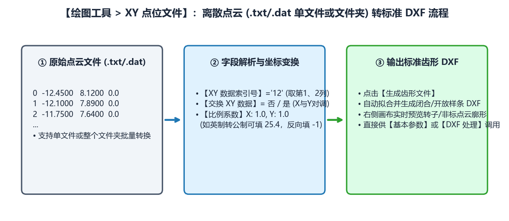

5.3 XY 点位文件导入与坐标缩放转换
在双螺杆压缩机阴阳转子（如 SRM-300F、SRM-301M）、特种泵螺杆以及三坐标测量机（CMM）逆向工程中，齿形数据往往以离散坐标点文件（.txt、.dat、.csv 或多段点云文件夹）的形式提供。绘图工具 -> XY 点位文件 模块可将任意列格式的离散点位一键转换为标准 .dxf 齿形文件。
一、XY 点位文件 转换流程与参数说明

| 参数名称 | 默认值 | 功能定义与配置技巧 |
|---|---|---|
点位文件地址 + 选择文件 |
空 | 点击 选择文件 时，系统首先弹出 选择类型 询问框：数据是单文件吗?选否为文件夹。• 点击 “是”：选择单个 .txt/.dat 点云文件；• 点击 “否”：选择包含多个分段点云文件的整个文件夹（常见于转子多段组成曲线），系统将按顺序自动合并拼接。 |
XY 数据索引号 |
01 |
指定文本每一行中，哪两列数字分别代表 和 坐标（列索引从 0 开始计数）：• 01（默认）：第 0 列为 ，第 1 列为 （适用于纯两列 X Y 格式）；• 12：第 1 列为 ，第 2 列为 （适用于带行号的三列/四列格式：序号 X Y Z，如三坐标测量导出报告）。 |
交换 XY 数据 |
否 |
下拉选择 否 或 是。当上游软件以水平轴为径向、垂直轴为齿宽方向输出点表时，将其设为 是 即可在导入瞬间将 坐标列整体对调。 |
比例系数 (X: / Y:) |
1 / 1 |
对读取到的 和 坐标分别乘以缩放因子： • 常规公制（）：保持 X: 1、Y: 1；• 英制（）转公制：填入 X: 25.4、Y: 25.4；• 坐标轴反向镜像：若需要将 或 方向倒置，可直接填入 -1（如 Y: -1）。 |
保存文件 + 选择文件 |
空 | 指定转换后生成的标准 .dxf 齿形文件保存路径。 |
二、标准操作步骤与注意事项
- 检查原始点位文本格式： 确认文本文件中的数值列之间以空格、制表符（Tab）或逗号分隔（软件会自动跳过非数字表头注释行）。
- 设定列索引与变换系数：
- 若文本行形如
-12.4500 8.1200，保持XY 数据索引号为01； - 若文本行形如
1 -12.4500 8.1200 0.0000（首列为点序号），将XY 数据索引号改为12。
- 若文本行形如
- 点击
生成齿形文件并核对视图：- 点击左下角
生成齿形文件后，右侧画布立即渲染出转换后的连续齿形曲线； - 观察画布坐标刻度，确认中径基准是否位于 （若原始点云以转子圆心为 ，可随后进入
工具箱 -> DXF 处理 -> DXF 变换将 坐标平移一个中径半径 ，使 对齐到中径）。
- 点击左下角